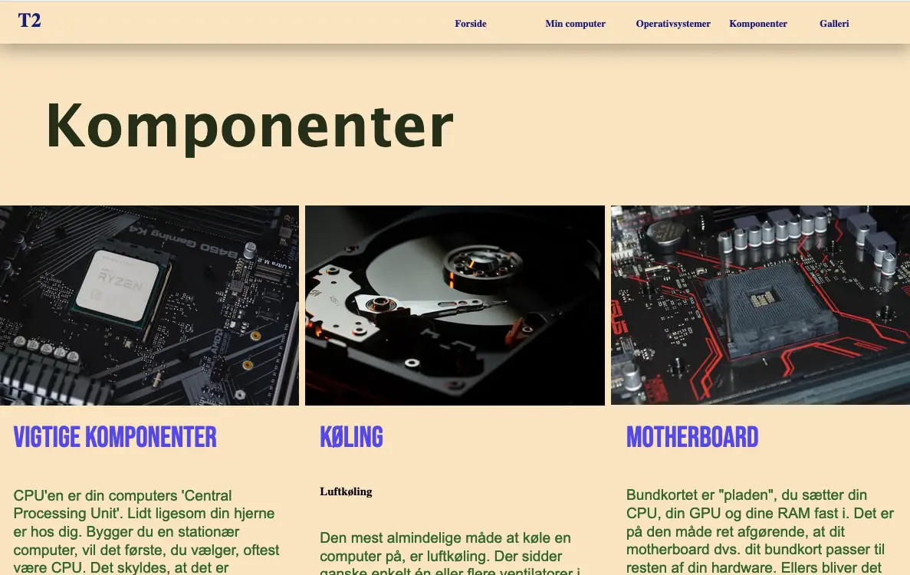
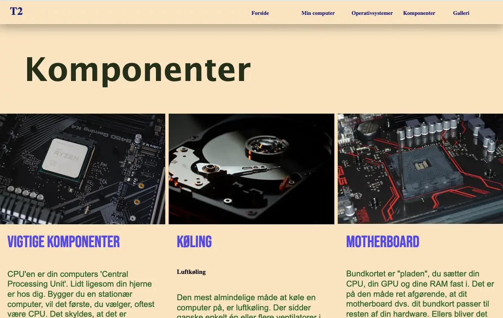

I dette tema blev vi introduceret til fundamentale professionelle koncepter indenfor design af digitale
brugergrænseflader, digital indholdsproduktion, digital kommunikation og responsivt webdesign.
I temaet havde vi opgaver indenfor grid, links, fonte og placering af indhold på et website.
I temaet havde vi opgaver indenfor grid, flex, mediaquery, links, fonte og placering af indhold på et
website.
Vi
sluttede dette tema af med studiestarsprøven, hvor vi fik vist hvad vi i dette tema havde lært.
Studiestartsprøven er
derfor projektet, jeg har valgt at tage med som eksempel på dette forløb. Da koden i dette projekt viste
alle
kravene for
dette tema i et projekt.
 

I studiestartsprøven havde vi lært om designprincipper og gestaltlove lige op til.
Det var derfor
gestaltlove - loven om
nærhed, da titler og brødtekst og billeder var meget tæt på hinanden på hjemmesiden, som der var fokus på i
dette
projekt.
Vi fik derudover tildelt layoutdiagrammer og wireframes, som vi skulle bruge til at lave layout på websitet.
Udover dette fik vi for første gang stiftet bekendtskab med wiseflow
, hvor vi fra vores eget domæne og via den tildelte mappestruktur på filezilla skulle uploade sitet fra,
ovre i
wiseflow.
Temaet var for mig en kæmpe mundfuld med MANGE nye programmer, hjælpe sites, designprincipper,
mappestrukturer og
generelt bare 2 helt nye sprog at lære udenaf.
Men dette fik alt i alt klædt os utrolig godt på til de
kommende temaer og
set i bakspejlet gav det rigtig god mening at skabe dette fundament så tidligt i semesteret, for nemmere at
bygge på
senere.